i2b2 Temporal Query Tool View
The Temporal Query Tool view extends the query functionalities provided by the classic Query Tool view. Users can create and submit temporal queries using the Temporal Query Tool view. It submits a “select query” that will retrieve information from the database associated to the i2b2 Workbench.
Supplemental Control – Group Binding Control Panel
Supplemental Control – Centralized Date Constraints
Step 2: Define Temporal Relationships
Temporal Relationship Definition Panel
Occurrence Temporal Constraint
Add Temporal Relationship Button
Step 3: Review and Submit Query
Occurrence Count Constraint Editor
Add Concept From Navigate Terms View
Add Concept From Find Terms View
Add Concept From Workplace View
Add modifier From Navigate Terms View
Add Modifier From Find Terms View
Add Modifier From Workplace View
Add Previous Query From Previous Query View (New Query)
Add Previous Query From Previous Query View (Query-In-Query)
Add Previous Query From workplace View (New Query)
Add Previous Query From Previous Query View (Query-In-Query)
Add Patient set From Previous Query View
Add Patient set From Workplace View
Add Encounter Set From Previous Query View
Add Encounter set From Workplace View
Add Query Definition From Workplace View
SPECIFIED DATE RANGE: FROM AND TO DATES DEFINED
SPECIFIC START DATE: ONLY THE FROM DATE IS DEFINED
SPECIFIC END DATE: ONLY THE TO DATE IS DEFINED
Setting the Occurrences Constraint
Using Units In Value Constraints
Vital Status Patient Breakdown
Introduction
The view is organized to facilitate the temporal querying process. There are three man steps in the process.
1. Defining a population.
2. Defining a temporal relationship.
3. Reviewing and submitting the query.
The view is designed to take user through each of the three steps. The section below describes the view for each step in detail.
The image below shows the starting point of the Temporal Query Tool view along with its annotations. Users would interact with the Group Panels t define a population they are interested in.
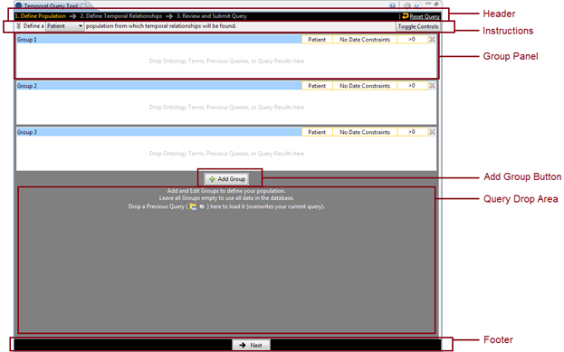
Header

The Header consists of two parts. On the left side are the three steps to be taken during the query submission process. The steps will appear in different colors, which indicate one of the following:
|
Color |
Indication |
|
Orange |
Indicates the step the user is currently on. |
|
Gray |
Indicates the user has not visited the step. |
|
White |
Indicates the user has visited the step but they are not currently on it. |
When the Temporal Query Tool opens the users are automatically on Step 1: Define Population.
On the right side are the Reset Query icon and link. Whenever the user wants to restart a query, clicking on the icon or the link will remove all contents that have been entered into the view and allow the user to start over.
|
|
WARNING: |
|
|
|
Once you click on the Reset Query, all data previously defined in the view will be cleared. Therefore you need to make sure you want to remove all the data before resetting the entire query. |
|
The Header, along with the Footer, is always available to users regardless which step the users are currently on.
Instructions

The Instructions area provides simple instructions to the user on what needs to be done. It consists of three parts:
1. The background
2. The Patient / Encounter Dropdown box
3. The Toggle Controls button.
Users can click on the background to expand the instructions to show the full instruction. Click it again to contract it to its original state.
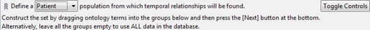
The Patient / Encounter Drop-down list allows users to choose whether to define the population of the query using patients or encounters. The default is “Patient”.
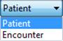
|
|
NOTE: |
|
|
|
Defining a population is optional. Skip step 1 if you want to use all the data available in your i2b2 database. |
|
Finally, clicking on the Toggle Controls button will show or hide the Supplemental Control Panel.
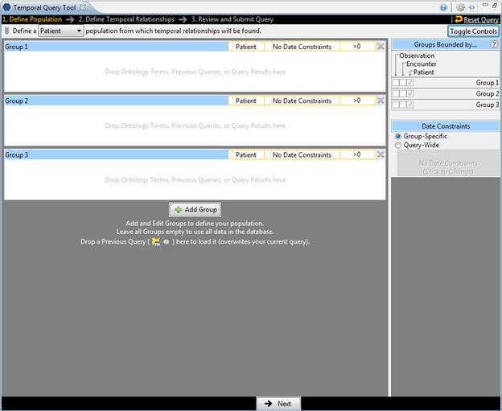
There are two main supplemental control components which are further defined in the next two sections.
Supplemental Control – Group Binding Control Panel

The Group Binding Control Panel allows users an overview of the Group Binding for all Group Panels in the current query.
1. Each group panel can be in one of the following binding choices which are synonymous to the timing choices in the classic Query Tool:
|
Temporal Query Tool Binding Choices |
Classic Query Tool Timing Choices |
|
Bound-by-Patient |
Treat all groups independently |
|
Bound-by-Encounter |
Selected groups occur in the same financial encounter |
|
Bound-by-Observation |
Item instance will be the same |
2. The three binding choices are hierarchical. Every group is Bound-by-Patient by default. Choosing Bound-by-Encounter for a group, that is also Bound-by-Patient. Similarly, choosing Bound-by-Observation, the group is also Bound-by-Encounter and Bound-by-Patient. The checkboxes reflect which level of binding the group currently is, and what changes users can make.
3. Only when a modifier term is in a group can that group be selected to be in Bound-by-Observation mode (and so the Observation checkbox will only be then clickable).
4. Hovering over the question mark icon will display a short explanation of the binding options.
5. The Group Binding model is the same as the timing model from the classic query tool. However the group binding is more simplified in that Query-Level timing is automatically determined by the Group Panel-Level timing.
6. The number of rows in the Group Binding Control Panel increases or decreases as Groups are added or removed.
Supplemental Control – Centralized Date Constraints
|
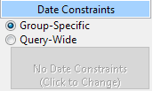 |
|

There are two options:
|
Option |
Description |
|
Group-Specific |
Let groups manage their own date constraints |
|
Query-Wide |
Use query-wide date constraints. Click to change the constraints |
This control panel sets the date constraints for all groups in the query. When a date constraint is set in this widget, each Group’s individual date constraint widget will be disabled. Select Query-Wide to set the date constraint for all groups. Select Group-Specific to allow each group to manage its own date constraints.
Group Panel
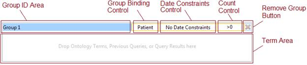
At the start up, the view for step 1 displays three groups by default. Each of the groups contains several components. In general, all areas bounded by an orange-yellow highlight are clickable.
Group ID Area
This area is the name tag for a group. The ID of the group is displayed here. It also serves as the drag / drop handle for the group. Users can drag a group (only groups that have content can be dragged) and drop them into the Workplace View. Users can also drag one group by its Group ID area and drop it on the other group’s Group ID area to overwrite the target group. A group from the Workplace view can also be dropped on the Group ID area.
Group Binding Control
This area allows users to set Group Binding for this group. The effect is exactly the same as setting it from the Group Binding Control Panel in the supplemental controls panel. User must click on this area to launch a popup window to set the group binding constraints for this group. For a Patient Population, the default binding is Patient. For an Encounter Population, the default is Encounter. Populations selection is made from the Patient / Encounter Drop-down list in the Instructions section.
Date Constraints Control
Users must click on this area to set the date constraints for this group. Date constraints are represented by a range. It has a start date and an end date. One or both of the start date and end date may be unspecified (none). By default, neither is specified, and the date constraints are from beginning of time to the most current recent time in the database. When date constraints are set, terms that occur outside of the specified range are not considered matches.
Occurrence Count Control
Tis control allows users to specify how many occurrences of a term must occur before it is considered a match. The default is at least 1 (represented by “>0”). Users can specify an at-least constraint (>) or an at-most constraint (<). A no occurrence options is allows as (=0). Note that this Count Control replaces both the occurrence control and the exclude button from the classic query tool.
Remove Group Button
Clicking on this button will remove the group from the query construction. Users should use it to quickly discard a group.
Term Area
This area accepts terms from the Ontology cell (Navigate Terms and Find Terms views). Users can drag a term from these views in addition to saved terms in Workplace view ad drop them here. In addition, Previous Queries, query results such as Patients, Patient Sets, or Encounter Sets can also be dropped here, depending on users’ needs.
Add Group Button

The Add Group button lets users add additional groups to their query.
Query Drop Area
A previous query saved in Workplace or Previous Queries views can be dragged and dropped her to reload the query. Reloading a query will overwrite the current query information. If the previous query is a temporal query, its population and temporal relationships will be loaded. If the previous query is a non-temporal query, only the population portion of the temporal query view will be loaded since a non-temporal query has no temporal relationship information.
Footer
The footer allows users to navigate through the three steps of the temporal querying process. Users must complete a step before they can move to the next step. In the first step, users can only move forward if the current step is completed. The first step is optional, so the “Next” button is always available. However, the transition from Step 2 to Step 3, a “Previous” button is also available for users to go back a step.
When users click on “Next” in Step 1, Step 2 will transition in from the right in a sliding animation. Before the animated transition, existing Groups will be compacted so that only Groups with content will remain. All empty Groups will be removed.
Step 2: Define Temporal Relationships is used to define temporal relationships. It allows users to create a list of Events and a list of Temporal Relationships. Users define a list of interested Events and also define Temporal Relationships to describe how the events are related temporally, e.g. Event A must occur before Event B.
The view is therefore a bit more complicated than Step 1 presented in the earlier section. It is broken into two major parts, presented below. On the left are the Event in Query panel and the Show Population panel. The Event in Query panel lets users define a list of Events. The Show Population panel allows users see and change the population definition originally defined in Step 1. On the right is a panel allowing users to add, remove, or modify relationships among the events.
Only when at least one relationship is defined will the “Next” button in the Footer become active so users can move to Step 3.
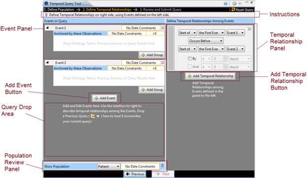
Instructions
Similar to the instructions in Step 1, Instructions area here can be expanded and collapsed with a mouse click.
(Collapsed form (default))
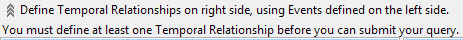
(Expanded form)
Events in Query Panel

The Events in Query Panel allows users to add, remove, and edit each Event. Each Event is represented by an Event Panel. An Event consists of a list of Groups just like a population definition. Users can add, remove, and edit each of the Groups in an Event by dragging terms into a group, changing its constraints, etc. At startup, two empty Events are added, each with a Group. More Events can be added by clicking on the Add Event button.
One difference between an Event and a set of Groups in Step 1 is that the first Group in an Event is special. It cannot be removed (note the missing Remove Group button), and its Group Binding Control is missing. The Group Binding for the 1st Group of every Event is not changeable. All other Group’s Group Bindings are changeable. The first group anchors all other groups in an Event. That is, the first Group determines the timing of the enclosing Event with respect to the other Events temporally in the query.
Under the list of Events is the gray background, which serves as a Query Drop Area. Users can drop previous query in the Query Drop Area to overwrite the current query. It has the same effect as the Query Drop Area in Step 1.
An Event Panel has several components.

Event ID
This area shows the Event’s name and color. Clicking on this area will expand/collapse the entire Event. When an Event Panel is collapsed, all its Groups are hidden. Only a row that contains the Event ID area is shown. Click on the Event ID area to expand the Event. All Events are expanded when created. Color of an Event is assigned only when at least one term has been added to it.

(Event 1 is collapsed, while Event 2 stays in its expanded form)
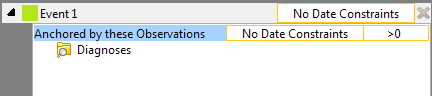
(Event 1 with a color label. Color is assigned when there is at least an item in one of the Event’s Groups)
Event-Wide Date Constraints
Selecting this area allows users to specify date constraints for all Groups in this Event. This serves a similar function as the supplemental Query-wide Date Constraints Control Panel in the Step 1 view.
Remove Event Button
Clicking this button will remove the Event, deleting all its content and removing it from view.
Group Panel
The Group Panel is the same as the ones in Step 1.
Add Group Button
Clicking on it adds a new Group to the Event.
Show Population Panel

At the bottom of the left hand side of the Step 2 view sits the Show Population Panel. This is a panel that is initially collapsed. It is a panel that conveniently allows users to bring up the Population created in Step 1 in the same view with the Events and Temporal Relationships in Step 2. Users can also modify the Population here directly. Any changes made here will change the Population in Step 1, and any changes made in Step 1 will affect the Population shown here because the Population is one and the same.
By clicking on the header “Show Population” or the expand icon to the right end of the panel, users can expand the panel to see the Population details:
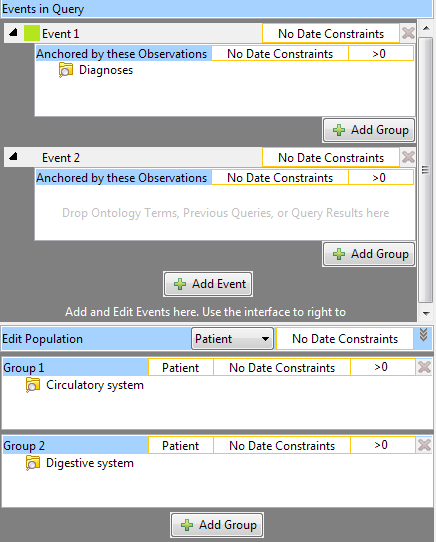
( Show Population Panel is Expanded and shown in context of the entire left-hand side of the Step 2 view.)
The population in Step 1 is shown. The title changes to “Edit Population,” and every component is editable just as they are in Step 1.
Temporal Relationship Definition Panel
On the right hand side of the Step 3 view is where users can define how Events are related to one another temporally. The Temporal Relationship Definition Panel contains a list of Temporal Relationship Panels and an Add Temporal Relationship Button. These components are described in detail below.
Please note that at least one Temporal Relationship Panel must be filled before users can move on to Step 3. A Temporal Relationship Panel is filled only if has a fulfilled Event in the Top Event Definition dropdown box and a fulfilled Event in the Bottom Event Definition dropdown box (see the image below). A fulfilled Event is one that has at least a fulfilled Group. A fulfilled Group is one that contains at least one term (not empty). Only when a fulfilled Temporal Relationship has been defined will the “Next” button become active.
Color Indicator
The color indicator shows the colors of the Events that are being referenced in the Temporal Relationship. The top color (green in this example) matches the color of the Event in the Top Event Definition row and the bottom color (orange) matches the color of the Event in the Bottom Event Definition row. If an Event that has no content is referred, no color will be displayed in the Color Indicator.
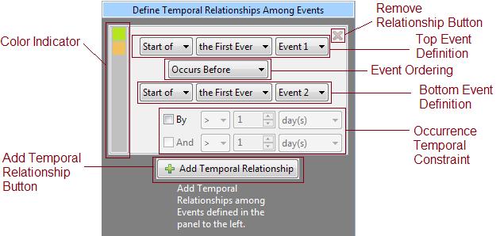
Remove Relationship Button
Clicking on this button will remove the Event and discard its content.
Top Event Definition
This row allows users designate the first Event in this Temporal Relationship. A second event is specified in the Bottom Event Definition row. The dropdown boxes have the following choices:
 (Dropdown box options for Event Definition)
(Dropdown box options for Event Definition)
Event Ordering
This dropdown box describes how the Top Event relates to the Bottom Event.
 (Dropdown
box options for Event Ordering)
(Dropdown
box options for Event Ordering)
Bottom Event Definition
This row allows users designate the second Event in this Temporal Relationship. It has the same dropdown box options as Top Event Definition.
Occurrence Temporal Constraint
Users can optionally describe the specified Event Ordering by a time range, creating the bolded part of, for example, “Event 1 Occurs Before Event 2 By > 5 day(s).” This additional temporal constraint can be a bounded range such as “By > 5 day(s) And < 10 day(s).” Users must first check the “By” checkbox to enable the dropdown boxes on that row. The “And” checkbox becomes enabled only when the “By” checkbox is checked. Checking the “And” checkbox enables the dropdown boxes on its row. Both the By row and the And row have the same options depicted below.
 (Options for Occurrence Temporal
Constraint)
(Options for Occurrence Temporal
Constraint)
Add Temporal Relationship Button
This adds a new Temporal Relationship Panel should users require more relationship constraints among Events.
The last step allows users to review and modify the name of the query and selection of analyses types they want the server to return as the results of the query.
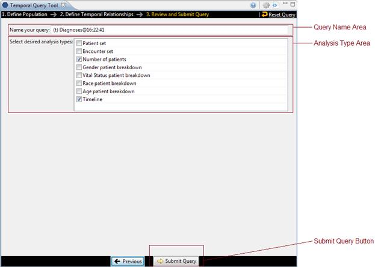
Query Name Area
Upon entering Step 3, a query name is automatically generated. A “(t)“ prefix indicates the query is a temporal query, differentiating it from normal queries submitted using the classic query tool. Some terms used in the query are then appended to identify this query. A timestamp is added at the end. Users may modify the query name however they wish. The name in the Query Name Area will be displayed in the Previous Query view once the query is submitted.
Analysis Type Area
The area presents the different analyses types users can select as results of the query. They are exactly the same as the ones from the classic Query Tool:
|
Table of Result Types |
|
|
Patient set |
Provides a set of patients who met the search criteria. |
|
Encounter set |
Provides a set of encounters for those patients who met the search criteria. |
|
Number of patients |
Provides the total number of patients who met the search criteria. |
|
Gender patient breakdown |
Provides a breakdown of the patient by their gender. |
|
Vital Status patient breakdown |
Provides a breakdown of the patient by their vital status. |
|
Race patient breakdown |
Provides a breakdown of the patient by their race. |
|
Age patient breakdown |
Provides a breakdown of the patient by their age. |
|
Timeline |
Provides a set of patients who met the defined criteria and automatically generates a timeline in the timeline view. |
By default Number of patients and Timeline are selected.
Submit Query Button
In Step 3, the Footer is different. Instead of another “Next” button, a Submit Query Button is there instead. It allows users to execute the query they have built in Step 1 and Step 2.
After pressing Submit Query, the button will become inactive to prevent inadvertent submission. A “Processing...” text will display to indicate that the query is being sent to the server for processing. The red rectangular button allows users to cancel the query submission.

When the server completes the processing, the number of patients found will be returned:

If the query takes too long, the following message will be displayed instead, in addition, the Submit Query Button will become available again. Users are advised to monitor the Previous Queries view to see when the query finishes.
Many of the UI elements discussed above are for display only. That is, they display the content of a Group or an Event or a Query, but they do not themselves allow editing of the values. Instead, users have to click on display components to launch an editor. The various editors are presented here.
This dialogs are all modal. That means no other actions can be performed when the dialog is launched. Users must first dismiss (typically by either selecting OK or Cancel) the dialog before other UI elements in the workbench can be interacted with.
The dialogs can be moved by dragging the blue title area around, and they usually appear where the mouse pointer is when launched.
Date Constraint Editor
The Date Constraint Editor is launched when user clicks on a Date Constraint Control in every Group Panel, in the title area of an Event, in the Supplemental Control Panel in Step 1, and in the View Population Panel in Step 2.
The editor starts up as the left-most figure below. Clicking on either of the orange-yellow-highlighted textboxes will launch a calendar widget for users to select the start (middle figure) or the end date (right-most figure). When finished, users should click on the OK button in the gray footer area to accept the constraints. Alternatively, clicking the Cancel button will leave the original date constraints unmodified.
The start and end date constraints are both inclusive. That is if the start date is January 1, 1999, and the end date is December 31, 1999, the range of the constraint spans from 1/1/1999 00:00:00.000 to 12/31/1999 23:59:59.999.
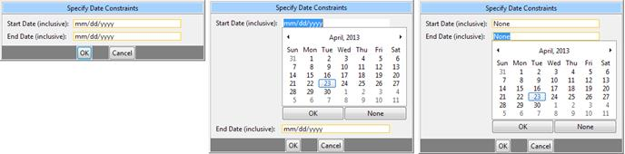
Group Binding Editor
The Group Binding Editor is found in every Group Panel. It lets users change the binding for that Group. The left figure depicts the initial appearance when a Group Binding Editor is launched. It consists of three rows, each represent a binding option. The last option (Bound-by-Observation) is only available as a choice if a modifier is dropped in the Group. Selecting one of the radio buttons and clicking on OK will set the new binding. Cancel will cancel the operation and leave the original binding unmodified.
The question mark icon for each row will expand and display a short explanation for that option when clicked. The right figure depicts when all three rows are expanded.

Occurrence Count Constraint Editor
This editor can be launched in every Group by clicking on its Count Control area. Users can specify how many (or few) times the terms in a Group must occur. The editor itself is simple: a dropdown box specifies the type of operator and a spinner allowing for a number to be specified.
The left figure shows the dialog at startup, and the right figure shows all the operator options.
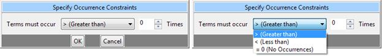
Value Editor
When users drop an ontology term that can be further constrained by values into a Group, a Value Editor will automatically launch. Users can use this editor to select a way to constrain the value of the term and specify what values to constrain the term by. If a term that supports values already exists in a Group, users can right click on the term and select “Edit Value...” to launch the Value Editor for that term. Please note that some Modifiers do not support values (e.g. Circulatory Systems [Primary diagnosis]).
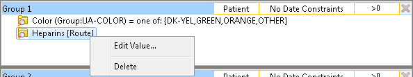
(Right click on a term that supports value constraints to launch the Value Editor)
|
|
NOTE: |
|
|
|
The constraint is optional. The default constraint put on these terms is “No Value”, and by closing the dialog immediately, users can quickly accept the default constraint. Please note that closing the dialog does not cancel the value editing operation, it instead accepts the values that are currently set. |
|
If multiple terms were dropped at the same time, all terms that support value constraints in the same drop will appear in a list the left side of dialog. Users can select the terms on the list to view and edit its value constraint. Alternatively, users can use the navigation buttons “Previous”, “Next” to navigate. Finally, to finish, users should select the last term on the list and click on “Finish.”
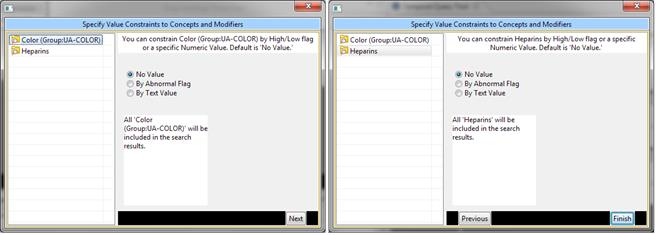
(The Value Editor shows two terms on its list on the left. The right half shows the currently set value constraints for the selected term on list. The default is “No Value.” Users can also navigate the list by using the “Next” “Previous” buttons on the bottom of the right half. When finished, click on the “Finish” button or simply close the dialog.)
Different terms support different kinds of value constraint, some are constrained by text, some by numeric value, some by a list of pre-arranged values, and some by abnormal flags. For example, the Color term supports abnormal flags and a list of pre-arranged values. These options are shown on the right half of the dialog. By selecting the radio buttons, users can choose the kind of constraint they want. Here are the screen shots of the right half of the dialog when radio buttons other than “No Value” are chosen for the term Color.

Creating a Query
This section describes the process of adding items to the query tool, “AND” / “OR” operators and setting constraints.
In order to create your query, you will need to define what information will be retrieved from the databases. Selected items from other i2b2 Workbench views can be dragged and dropped (copied) into the Temporal Query Tool view.
1. Concepts
Concepts () can be defined as
terms, results, providers, etc. They can be added as a group (folder ( )) or individually by
dragging the item(s) from Navigate Terms, Find Terms, and Workplace
views.
)) or individually by
dragging the item(s) from Navigate Terms, Find Terms, and Workplace
views.
2. Modifiers
Modifiers ( ) are associated with a
concept or group of concepts. They can be added as a group (modifier folder (
) are associated with a
concept or group of concepts. They can be added as a group (modifier folder ( )) or individually
by dragging the item(s) from Navigate Terms, Find Terms, and Workplace
views.
)) or individually
by dragging the item(s) from Navigate Terms, Find Terms, and Workplace
views.
3. Previous Query
A new query can be created from one
that has already been run by dragging the previous query ( or
or  ) from Previous
Query and Workplace views.
) from Previous
Query and Workplace views.
4. Patient Set
A patient set ( ) can be used in a query by
dragging the item(s) from Previous Query and Workplace views.
) can be used in a query by
dragging the item(s) from Previous Query and Workplace views.
5. Individual Patient
A patient ( ) or several
patients can be used in a query by dragging them from Previous Query
view and Workplace views.
) or several
patients can be used in a query by dragging them from Previous Query
view and Workplace views.
6. Encounter Set
An encounter set ( ) can be used in a query by
dragging the item(s) from Previous Query and Workplace views.
) can be used in a query by
dragging the item(s) from Previous Query and Workplace views.
7. Query Definition
A new query can be created from one that has already been run by dragging the query definition () from the Workplace view.
8. Group Template
Users can define a group of
concepts that they frequently run and save them in their workplace view. This
grouping of concepts is referred to as a group template ( ).
).
A new query can be created using the group template by dragging the template from Workplace view to the Group Header.
There are two operators, known as SQL Logical Operators, which are necessary when running a query that has more than one term. These operators provide a way to specify exactly what users want to retrieve. The operators are the ‘AND’ and ‘OR’ operators.
The query tool knows which operator to use based on the panels used when defining the query. It is important to verify the users are setting up their query correctly as each operator will return different results.
AND Operator
The AND operator returns a record if both the first condition and the second conditions are true.
The query tool uses the AND operator when concepts are listed in different panels.
Example:
WHAT: Return only those patients who have Acute Myocardial Infarction AND Angina Pectoris.
HOW: In the query tool add the concept Acute Myocardial Infarction to Group 1 and then add the concept Angina Pectoris to Group 2 .
RESULT: The population is limited by requiring the patients to have both Acute myocardial infarction and Angina pectoris..

OR Operator
The OR operator returns a record if either the first condition or the second conditions is true.
The query tool uses the OR operator when concepts are listed in the same panel.
Example:
WHAT: Return any patients who have Acute Myocardial Infarction or Angina Pectoris associated to them.
HOW: In the query tool you add both concepts, Acute Myocardial Infarction and Angina Pectoris, to Group 1.
RESULT: The population is limited to include all patients who fit either one of those criteria.
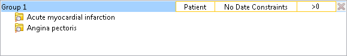
In short, terms within a Group are ORed together, while different Groups are ANDed together.
Concepts can be added to the Query Tool view by simply dragging the concept from one of the following views.
· Navigate Terms view
· Find Terms view
· Workplace view
How to add a concept from each of these views is explained in the next few sections.
Navigate Terms View
The Navigate Terms view contains a hierarchical display of all the items that can be used to search the database.
|
|
NOTE: |
|
|
|
How the items are grouped and displayed is dependent on how the database is setup. |
|

Add Concept From Navigate Terms View
1. In the Navigate Terms view, expand the folder(s) that contain the concept or grouping of concepts that you want to add.
2. Highlight
the concept ( ) or folder
(
) or folder
( ) by clicking on its name.
) by clicking on its name.
3. While holding the left mouse button down, drag the item over to the Query Tool View.
4. Drop the item into the panel labeled Group 1.

5. The item will now display in the panel for Group 1.

Find Terms View
The Find Terms view provides a way to search for a particular concept and modifier.

Add Concept From Find Terms View
1. In the Find Terms view, search for the item(s) you want to add.
2. Highlight
the concept ( ) or folder
(
) or folder
( ) by clicking on its name.
) by clicking on its name.
3. While holding the left mouse button down, drag the item over to the Query Tool View.
4. Drop the item into the panel labeled Group 1.
5. The item will now display in the panel for Group 1.
Workplace
Information in the Workplace is related to the most common concepts, modifiers, and queries that an individual uses and in essence becomes their personal workplace.

Add Concept From Workplace View
1. In the Workplace view, expand the folder(s) that contain the concept or grouping of concepts you want to add.
2. Highlight
the concept ( ) or folder
(
) or folder
( ) by clicking on its name.
) by clicking on its name.
3. While holding the left mouse button down, drag the item over to the Query Tool View.
4. Drop the item into the panel labeled Group 1.
5. The item will now display in the panel for Group 1.
Modifiers can be added to the Query Tool view by simply dragging the modifier from one of the following views.
· Navigate Terms view
· Find Terms view
· Workplace view
How to add a modifier from each of these views is explained in the next few sections.
Navigate Terms View
The Navigate Terms view contains a hierarchical display of all the items that can be used to search the database.
|
|
NOTE: |
|
|
|
How the items are grouped and displayed is dependent on how the database is setup. |
|
Add modifier From Navigate Terms View
1. In the Navigate Terms view, expand the folder(s) that contains the modifier or grouping of modifiers that you want to add.
2. Highlight
the modifier ( ) or modifier
folder (
) or modifier
folder ( )
by clicking on its name.
)
by clicking on its name.
3. While holding the left mouse button down, drag the item over to the Query Tool View.
4. Drop the item into the panel labeled Group 1.

5. The item will now display in the panel for Group 1.
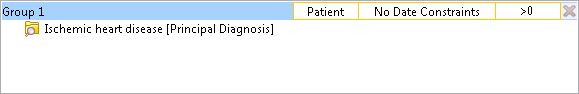
Find Terms View
The Find Terms view provides a way to search for a particular concept and modifier.
|
|
NOTE: |
|
|
|
For detailed information on how to search for terms and modifiers, please see the i2b2 Find Terms View help. |
|
Add Modifier From Find Terms View
1. In the Find Terms view, search for the modifier(s) you want to add.
2. Highlight
the modifier ( ) or modifier
folder (
) or modifier
folder ( )
by clicking on its name.
)
by clicking on its name.
3. While holding the left mouse button down, drag the item over to the Query Tool View.
4. Drop the item into the panel labeled Group 1.
5. The item will now display in the panel for Group 1.
Workplace
Information in the Workplace is related to the most common concepts, modifiers, and queries that an individual uses and in essence becomes their personal workplace.
Add Modifier From Workplace View
1. In the Workplace view, expand the folder(s) that contain the modifier or grouping of modifiers you want to add.
2. Highlight
the modifier ( ) or modifier
folder (
) or modifier
folder ( )
by clicking on its name.
)
by clicking on its name.
3. While holding the left mouse button down, drag the item over to the Query Tool View.
4. Drop the item into the panel labeled Group 1.
5. The item will now display in the panel for Group 1.
A previous query can be used to run a new query or as an item within a query (query-in-query). To add a previous query to the Query Tool view simply drag the query name from one of the following views.
· Previous Query view
· Workplace view
Within the Query Tool view, the previous query can be added to one of the following two locations.
|
Column 1 |
Column 2 |
|
Query Name field |
The item(s) and constraints from the original query will be used to create a new query. This information can be edited to make a new query or can be used as is to run the query again. Please note that the tool does not currently support dropping of a previous query of a previous query or a previous query of a temporal query. |
|
Panel (Group) |
Used within a new query (query-in-query). Add additional search criteria (items) to be used in the new query. |
How to add a previous query from each of the views listed above is explained in the next few sections.
Previous Query View
The Previous Query view displays the queries that were run by the user.
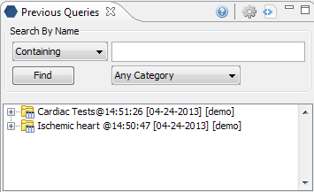
Add Previous Query From Previous Query View (New Query)
1. In
the Previous Query view highlight the previous query ( ) by clicking on its
name
) by clicking on its
name
2. While holding the left mouse button down, drag the item over to the Temporal Query Tool View.
3. Drop the previous query into the Query Drop Area in either Step 1 or Step 2.
4. The terms, Groups, Events, and Temporal Relationships defined in that previous query will be reconstituted in the current view. If the previous query is a non-temporal query, then only the Population portion of the UI will be reconstituted. If the previous query is a temporal query, then both the Population portion and the temporal relationship portion of the UI will be reconstituted.
Add Previous Query From Previous Query View (Query-In-Query)
1. In
the Previous Query view highlight the previous query ( ) by clicking on its
name
) by clicking on its
name
2. While holding the left mouse button down, drag the item over to the Query Tool View.
3. Drop the previous query into the panel labeled Group 1.
4. The previous query will now display in the panel for Group 1.
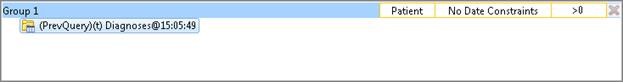
Workplace View
Information in the workplace is related to the most common concepts, modifiers, and queries that an individual uses and in essence becomes their personal workplace.
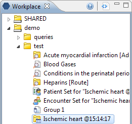
Add Previous Query From workplace View (New Query)
1. In the Workplace view, expand the folder(s) that contains the previous query you want to add.
2. Highlight
the previous query ( ) by
clicking on its name
) by
clicking on its name
3. While holding the left mouse button down, drag the item over to the Query Tool View.
4. Drop the previous query into the Query Drop Area in either Step 1 or Step 2.
5. The terms, Groups, Events, and Temporal Relationships defined in that previous query will be reconstituted in the current view. If the previous query is a non-temporal query, then only the Population portion of the UI will be reconstituted. If the previous query is a temporal query, then both the Population portion and the temporal relationship portion of the UI will be reconstituted.
Add Previous Query From Previous Query View (Query-In-Query)
1. In the Workplace view, expand the folder(s) that contains the previous query you want to add.
2. Highlight
the previous query ( ) by
clicking on its name
) by
clicking on its name
3. While holding the left mouse button down, drag the item over to the Query Tool View.
4. Drop the previous query into the panel labeled Group 1.
5. The previous query will now display in the panel for Group 1.
Add Patient Set
A patient set can be added to the Query Tool view by simply dragging the list of patients from one of the following views.
· Previous Query view
· Workplace view
How to add a patient set from each of the views is explained in the next few sections.
Previous Query View
The Previous Query view displays the queries that were run by the user.
Add Patient set From Previous Query View
1. In
the Previous Query view click on the plus sign ( ) next to the name of the previous query that contains the
patient set.
) next to the name of the previous query that contains the
patient set.
2. Click
on the plus sign ( ) next
to the results folder.
) next
to the results folder.
3. Highlight
the patient set ( ) by
clicking on its name
) by
clicking on its name
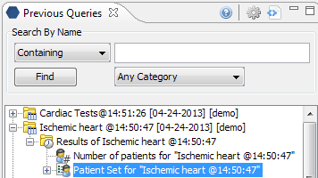
4. While holding the left mouse button down, drag the item over to the Query Tool View.
5. Drop the patient set into the panel labeled Group 1.
6. The patient set will now display in the panel for Group 1.
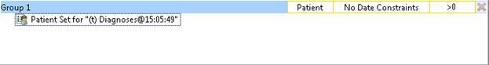
Workplace View
Information in the workplace is related to the most common concepts, modifiers, and queries that an individual uses and in essence becomes their personal workplace.

Add Patient set From Workplace View
1. In the Workplace view find the patient set you want to add.
2. Highlight
the patient set ( ) by
clicking on its name
) by
clicking on its name
3. While holding the left mouse button down, drag the item over to the Query Tool View.
4. Drop the patient set into the panel labeled Group 1.
5. The patient set will now display in the panel for Group 1.

An encounter set can be added to the Query Tool view by simply dragging the encounter set from one of the following views.
· Previous Query view
· Workplace view
How to add an encounter set from each of the views is explained in the next few sections.
Previous Query View
The Previous Query view displays the queries that were run by the user.
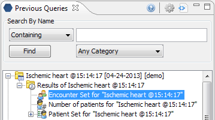
Add Encounter Set From Previous Query View
1. In
the Previous Query view click on the plus sign ( ) next to the name of the previous query that contains the
encounter set.
) next to the name of the previous query that contains the
encounter set.
2. Click
on the plus sign ( ) next
to the results folder.
) next
to the results folder.
3. Highlight the encounter set () by clicking on its name
4. While holding the left mouse button down, drag the item over to the Query Tool View.
5. Drop the encounter set into the Group 1.
6. The encounter set will now display in the panel for Group 1.
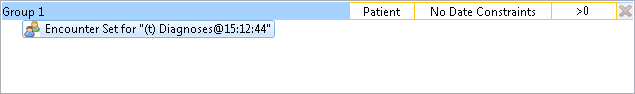
Workplace View
Information in the workplace is related to the most common concepts, modifiers, and queries that an individual uses and in essence becomes their personal workplace.
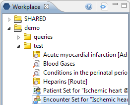
Add Encounter set From Workplace View
1. In the Workplace view find the encounter set you want to add.
2. Highlight the encounter set () by clicking on its name
3. While holding the left mouse button down, drag the item over to the Query Tool View.
4. Drop the encounter set into Group 1.
5. The encounter set will now display in the panel for Group 1.
A query definition can be added to the query tool view by simply dragging the query name from the workplace view.
Add Query Definition From Workplace View
In the Workplace view, find the query definition you want to add.
1. Highlight
the query definition ( )
by clicking on its name
)
by clicking on its name
2. While holding the left mouse button down, drag the item over to the Query Tool View.
3. Drop the query definition into the Query Drop Area in Step 1 or Step 2.
4. The item(s) associated with the query definition will display in the appropriate group(s), the name of the query will appear at Query Name, and any constraints that were defined when the original query was run will now default with the new query.
Users can define a group of concepts that they frequently run and save them in their workplace view. This grouping of concepts is referred to as a group template.
A new query can be created using the group template by dragging the template from Workplace view to the Group Header.
Suppose we have the following Group that has been saved to Workplace as Group 1:
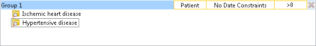
1. In the Workplace view, find the group template you want to add.
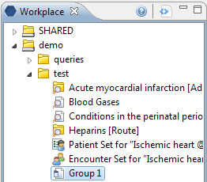
2. Highlight
the group template ( ) by
clicking on its name.
) by
clicking on its name.
3. While holding the left mouse button down, drag the item over to the Query Tool View.
4. Drop the group template into the panel labeled Group 2.
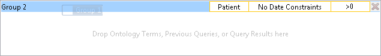
5. The items(s) associated with the group template will display.
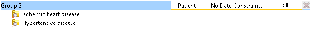
Three Group Panels are displayed in Step 1 by default. In step 2, only one Group Panel is available per Event. Some complex queries may require the use of additional panels. Users may use the “Add Group“ button to add more Groups.
1. Click on the Add Group button.

(Add Group button in Step 1)
2. A new panel is added with each click (two clicks are performed here to create a total of three Group Panels).

In Step 2, there is an “Add Group” button for each Event, and an additional one to add Group to the population. These “Add Group” buttons work exactly the same as the one described above.
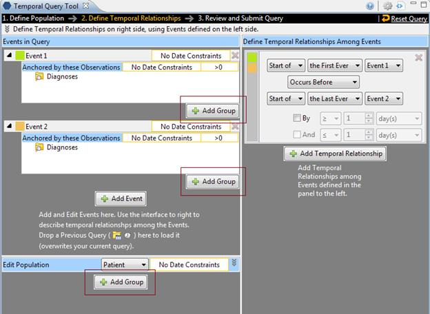
(Step 2 “Add Group” buttons)
Users can remove a Group from a query (or Event in the temporal query UI) or a term in a Group.
Remove Groups
1. Click on the Remove Group button () located to the right top of every Group.
2. The Group and all its content will be removed

Delete a Single Item
1. Right click on the item in the group that you want to remove.
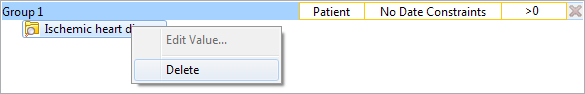
2. Select Delete Item from the list.
3. The item will be removed from the Group Panel
Constraints are used to narrow down the search criteria to a particular time from, number of occurrences or a specific value or range of values. In i2b2, there are several types of constraints that can be defined in the Query Tool view.
|
Constraint Type |
Description |
|
Group Binding (Panel Timing) |
Constraint is defined on the Group and utilizes the patient encounters and / or instance number when determining eligibility. There are three binding choices. The most general one is bound-by-patient, followed by bound-by-encounter, and finally, the strictest one is bound-by-observation. |
|
Date |
Constraint uses a date range when determining eligibility |
|
Occurrence |
Constraint is by the number of occurrences an item is documented. |
|
Value |
Constraint is by the value associated to a concept or modifier. Not all items have values. |
|
|
NOTE: |
|
|
|
In the client, the value constraints are currently the only ones that directly correspond to a single concept. All others are defined on the query or Group level. |
|
Group Binding Constraints
Group binding constraints utilize the encounter/observation information along with the items defined to determine if a patient meets the search criteria.
Note that this is previously known as Panel Timing in the classic Query Tool. In the classic Query Tool, users can also specify Query Timing. In the Temporal Query Tool, Query Timing is automatically set by the choice of Group Bindings. That is, the strictest Group Binding dictates what the Query Timing is:
· if there is a Group that is “bound-by-observation,” then the query timing will be “bound-by-observation” (or in the classical terminology, “same instance.”)
· If there is a Group that is bound-by-encounter,” but no Groups “bound-by-observation,” then the query timing will be “bound-by-encounter,” (or classically, “same encounter.”)
· Otherwise the query timing is “bound-by-patient” (“treat independently.”)
Group Binding
Group Binding sets the binding for each Group. Possible values are Bound-by-Patient, Bound-by-Encounter, and Bound-by-Observation. These constraints tell the query processor that these Groups describe the same patient, encounters or observation.
In step 1, the default binding for each Group changes depending on whether users are defining a Patient Population or an Encounter Population. If Patient Population is used, then Bound-by-Patient is the default, and it is unchangeable. If Encounter Population is used, then Bound-by-Encounter is the default. However, in this case, users can change each Group’s binding to Bound-by-Patient if they so desire or to Bound-by-Observation if a modifier term is used in that Group.
Users can select one of three available options:
1. Bound-by-Patient
· The items (facts) can occur at any time in the patient’s history.
2. Bound-by-Encounter
· The items (facts) occur during the same encounter (e.g. visit to hospital).
3. Bound-by-Observation
· The items (facts) occur during the same observation.
The values are hierarchical: a Group that is bound-by-observation is also bound-by-encounter and bound-by-patient. A group that is bound-by-encounter is also bound-by-patient. Every group is bound-by-patient.
The Group Binding for a Group can be set by launching the Group Binding Editor, by clicking on the highlighted area in a Group:

The Group Binding Editor consists of 3 rows, each representing a possible Group Binding value. Selecting one and click OK will set the value. Please note that the Bound-by-Observation value is only selectable when the Group contains Modifier. Clicking on the question marks on the row reveals a short description of what the binding means:
Users can also set the Group binding for all Groups using the Group Binding Control Panel in the Supplemental Control Panel in Step 1 (after pressing the Toggle Controls button):
This control panel gives a quick overview of Group Binding values for all Groups at –a-glance. Unfortunately, it is not available in temporal query mode.
Bound-by-Patient
The items (facts) can occur at any time in the patient’s history.

Bound-by-Encounter
The items (facts) occur during the same encounter (e.g. visit to hospital).

Example:
Patient has a diagnosis of Acute MI documented at any time in their history and they have a medication with a dose greater than 500 mg and a medication that is taken once a day documented during the same encounter.
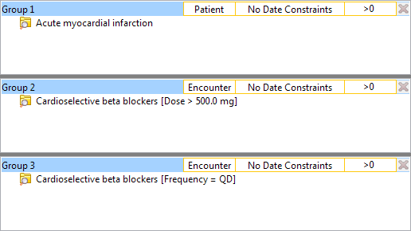
RESULTS: In our database, there are 4 patients who have had a medication with a dose greater than 500 mg and a frequency of once a day entered as a fact in the observation_fact table, where the medication dose and frequency have the same encounter_num AND the diagnosis of acute MI, the medication dose and frequency all have the same patient_num.
Bound-by-Observation
The items (facts) listed in the panel occur during the same observation of a visit.
Example:
Patient has a diagnosis of Acute MI documented at any time in their history and they have a medication with a dose greater than 500 mg and a medication that is taken once a day documented during the same instance.

RESULTS: In our database, there are 3 patients who have had a medication with a dose greater than 500 mg and a frequency of once a day entered as a fact in the observation_fact table, where the medication dose and frequency have the same encounter_num AND instance_num AND the diagnosis of acute MI, the medication dose and frequency all have the same patient_num.
Date Constraint
Users can define a date range to be used when querying the database. This date range can be in any one of the following combinations. Note that all start and end dates are inclusive.
SPECIFIED DATE RANGE: FROM AND TO DATES DEFINED
Only data with activity within the defined date range will be used.
Example:

Concept: Acute Myocardial Infarction
From date: 01/01/2001
To date: 12/31/2005
In this example, if a patient has a diagnosis of Acute Myocardial Infarction (MI) entered on the record from 01/01/2001 to 12/31/2005 then their data will be included. If the patient does have an MI diagnosis but it was entered prior to 01/01/2001 or after 12/31/2005 then their information will not be included.
SPECIFIC START DATE: ONLY THE FROM DATE IS DEFINED
Data from the defined start date to the latest date available. No end date defined.
Example:

Concept: Acute Myocardial Infarction
From date: 01/01/2001
To date:
In this example, if a patient has a diagnosis of Acute Myocardial Infarction (MI) entered on the record any time on or after 01/01/2001 will be included. If the diagnosis was entered prior to 01/01/2001 then the data will not be included.
SPECIFIC END DATE: ONLY THE TO DATE IS DEFINED
All data up until the defined end date. No start date defined.
Example:

Concept: Acute Myocardial Infarction
From date:
To date: 12/31/2005
In this example, if a patient has a diagnosis of Acute Myocardial Infarction (MI) entered on the record prior to and including 12/31/2005 then their data will be included. If the diagnosis was entered after 12/31/2005 then it will not be included.
SETTING THE DATE CONSTRAINT
1. Click on the Date Constraint Control located on the top part of a Group Panel.
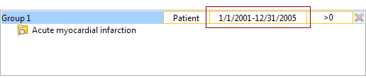
2. The Date Constraint Editor will open.

3. Click on the orange-yellow highlighted text boxes to reveal calendar widgets:
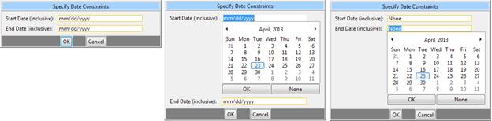
4. Use the calendar widgets to select the desired date, or press “None” to remove the constraint on the start date or the end date. Note that all start and end dates are inclusive. Users can alternatively type directly on the text box using the format mm/dd/yyyy. Pressing ‘n’ on the keyboard to quickly set the textbox ‘None.’
· If both start and end dates are ‘none,’ then the Group will have no date constraints.
· If only the start date is ‘none,’ then the constraint is any time before the end date.
· If only the end date is ‘none,’ then the constraint is any time after the start date.
5. When finished, press “OK” at the bottom to accept constraint values. Or press “Cancel” to revert to the values before the dialog was launched.
6. The new date constraints will now be displayed in the Group.
Occurrences Constraint
Users can define a number of times an item has to occur in order to be considered a positive “hit”. Please note that the Occurrence Constraint and Exclusion from the classic query tool have been rolled into the same constraint. Here is an example of conversions from the classical query tool occurrence and exclude specification to the new occurrence constraint specification:
1. (Exclude 1) (exclude anyone who has one or more occurrence of the desired terms) -> Edit the occurrence to (=0).
2. (Exclude 2) (Exclude anyone who has two or more occurrences of the desired terms) -> Edit the occurrence to (<2).
3. (1) (Only take those who have one or more occurrences of the desired terms) -> Edit the occurrence to (>0). (This is the default)
4. (2) (Only take those who have two or more occurrences of the desired terms) -> Edit the occurrence to (>2).
Setting the Occurrences Constraint
1. Click on the Occurrence Count Control located in the top part of a Group Panel.

2. The Occurrence Count Editor will open.
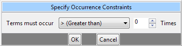
3. Use the dropbox to select the desired operator and the spinner to choose the desired number. The dropbox has the following options:
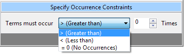
4. Click on the OK button to accept.
5. Occurrence Count Control will update to the new constraint (4 examples provided below):

Different operator/number combinations will have different background. The default (>0) is white with gray text. If the operator is > and the number is greater than 0, then it will be green. If the operator is < or =, then the background will be pink. Please note that choosing the equal (=) operator restricts the number to zero (0) – you cannot choose equals x (=x), where x is any non-zero number.
Value Constraint
Value constraints can be associated with concept and modifiers but not all of them will have values. For instance, the diagnosis of Acute Myocardial Infarction does not have a value but the tests used to make the diagnosis do have values (high/ low flags, or numeric values, etc.).
Flag Value
Flags are defined in the source system when the value is entered. The following are some examples that can be found in the i2b2 Demo database.
· High
· Low
· Abnormal
Setting the Value Constraint (Flag)
|
|
NOTE: |
|
|
|
The value constraint window will open automatically when you drop a concept into a Group Panel. This will only happen if the concept is setup to support values in the database with XML metadata. The first three steps can be used if you did not add a value constraint when you added the item to the panel or if you wish to edit an existing item. |
|
1. Using the right mouse button, click on the item in the panel.
2. A pop-up menu will open.

3. Select Set Value from the list.
4. The Value Editor will open.
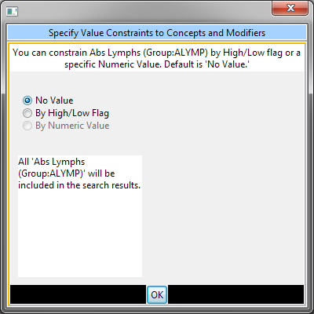
5. Click the radial dial next to By high/low flag.
6. A new field with a drop-down selection box will appear.

7. Click on the drop-down arrow to change the selection or accept the default.
8. Click on the OK button.
9. The value constraint entered will now appear next to the item in the panel.

Text Value
The text is defined in the source system when the value is entered. The following are some examples that can be found in the i2b2 Demo database.
· Test Not Performed
· Borderline
· Positive
Setting the Value Constraint (Text)
|
|
NOTE: |
|
|
|
The value constraint window will open automatically when you drop a concept into a Group Panel. This will only happen if the concept is setup to support values in the database with XML metadata. The first three steps can be used if you did not add a value constraint when you added the item to the panel or if you wish to edit an existing item. |
|
1. Using the right mouse button, click on the item in the panel.
2. A pop-up menu will open.

3. Select Set Value from the list.
4. A new window will open.
5. Click the radial dial next to By text value.
6. A new field listing the enumerated values will display.
7. Click on the check box next to the values you want to include.
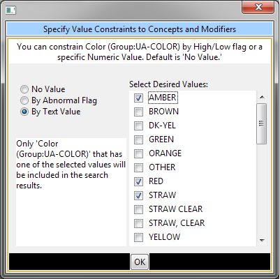
8. Click on the OK button.
9. The value constraint entered will now appear next to the item in the panel.
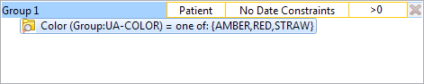
Numeric Value
The numeric value is defined in the source system when the result is entered. The following are some example formats that can be found in the i2b2 Demo database.
· 200
· 1.3
Unlike flag and text values, numeric values use operators, such as greater than or less than when setting the constraints. The following is a listing of operators currently in use.
|
Operator |
Description / Use |
|
Less Than (<) |
Any value less than the number entered. |
|
Less Than or Equal To (<=) |
Any value less than or equal to the number entered (inclusive). |
|
Equal To (=) |
An exact match to the number entered. |
|
Between |
Any value in the range of numbers entered. |
|
Greater Than (>) |
Any value greater than the number entered. |
|
Greater Than or Equal To (>=) |
Any value greater than or equal to the number entered (inclusive). |
Setting the Value Constraint (Numeric)
|
|
NOTE: |
|
|
|
The value constraint window will open automatically when you drop a concept into a Group Panel. This will only happen if the concept is setup to support values in the database with XML metadata. The first three steps can be used if you did not add a value constraint when you added the item to the panel or if you wish to edit an existing item. |
|
1. Using the right mouse button, click on the item in the panel.
2. A pop-up menu will open.
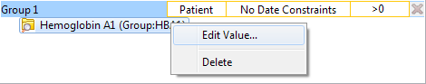
3. Select Set Value from the list.
4. A new window will open.
5. Click the radial dial next to By numeric value.
6. Two new fields will appear; one with a drop down selection box and the other a text box.
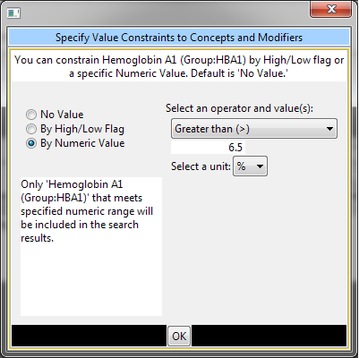
7. Click on the drop-down arrow to change the operator or accept the default.
8. Enter a numerical value and choose the appropriate unit:

9. Click on the OK button.
10. The value constraint entered will now appear next to the item in the panel.
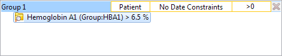
Using Units In Value Constraints
Units in regards to i2b2 are the standard units of measurement associated with a value. For instance, a medication may have “mg” listed as the unit for the dose, while a Hgb lab test may have “gm/dL”.
The units are defined in the source system and although it is recommended that all numerical facts are stored in normalized units it is recognized that this is not always feasible. Therefore, the workbench has the ability to convert the units when running a query.
In order for this feature to work a parameter called CRC_ENABLE_UNITCD_CONVERSION must be defined for the project. If this is not defined you need to contact your system administrator.
Running a Query
This section describes the process of generating and running a query.
Before users submit their query to the server, they must select the analysis types they want from the Analysis Type Area in Step 3. There are several result types available, each of which will yield a different output.
|
Table of Result Types |
|
|
Patient set |
Provides a set of patients who met the search criteria. |
|
Encounter set |
Provides a set of encounters for those patients who met the search criteria. |
|
Number of patients |
Provides the total number of patients who met the search criteria. |
|
Gender patient breakdown |
Provides a breakdown of the patient by their gender. |
|
Vital Status patient breakdown |
Provides a breakdown of the patient by their vital status. |
|
Race patient breakdown |
Provides a breakdown of the patient by their race. |
|
Age patient breakdown |
Provides a breakdown of the patient by their age. |
|
Timeline |
Provides a set of patients who met the defined criteria and automatically generates a timeline in the timeline view. |
By default Number of patients and Timeline are selected.
Patient Set
This option will return a list of patients who met the defined criteria and will add the query and patient set to the previous query view.

Encounter Set
This option will return a set of encounters for those patients who meet the defined criteria and will add the query and encounter set to the previous query view.
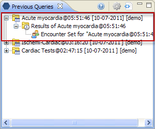
Number of Patients
This option will return a total count for those patients who meet the defined criteria and will display the appropriate information in the following two views.
1. Analysis View – displays the breakdown in a bar chart.
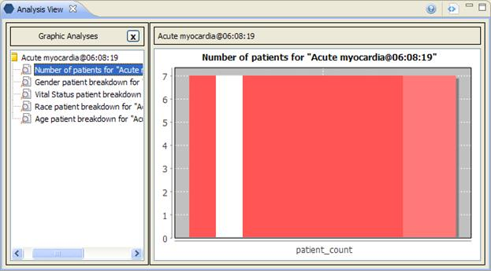
|
|
NOTE: |
|
|
|
The number is displayed in the tool tip, which can be seen by hovering over the bar on the chart. |
|
2. Previous Query View – displays the query and the results returned.
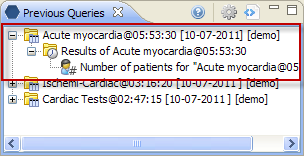
|
|
NOTE: |
|
|
|
The number is displayed in the tool tip, which can be seen by hovering over Number of Patients. |
|
Gender Patient Breakdown
This option will return a breakdown by gender for those patients who meet the defined criteria and will display the appropriate information in the following two views.
1. Analysis View – displays the breakdown in a bar chart.
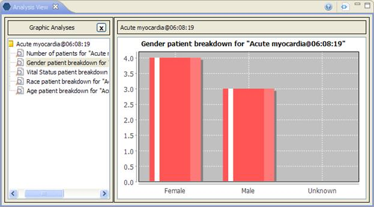
|
|
NOTE: |
|
|
|
The number is displayed in the tool tip, which can be seen by hovering over the bar on the chart. |
|
2. Previous Query View – displays the query and the results returned.
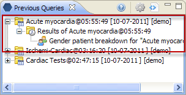
Vital Status Patient Breakdown
This option will return a breakdown by vital status for those patients who met the defined criteria and will display the appropriate information in the following two views.
1. Analysis View – displays the breakdown in a bar chart.
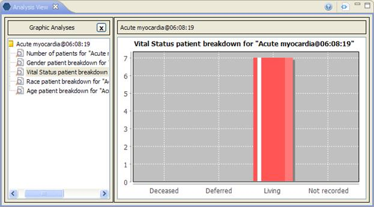
|
|
NOTE: |
|
|
|
The number is displayed in the tool tip, which can be seen by hovering over the bar on the chart. |
|
2. Previous Query View – displays the query and the results returned.

Race Patient Breakdown
This option will return a breakdown by race for those patients who met the defined criteria and will display the appropriate information in the following two views.
1. Analysis View – displays the breakdown in a bar chart.
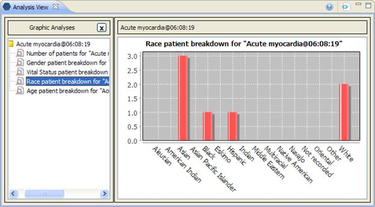
|
|
NOTE: |
|
|
|
The number is displayed in the tool tip, which can be seen by hovering over the bar on the chart. |
|
2. Previous Query View – displays the query and the results returned.

Age Patient Breakdown
This option will return a breakdown by age for those patients who met the defined criteria and will display the appropriate information in the following two views.
1. Analysis View – displays the breakdown in a bar chart.
|
|
NOTE: |
|
|
|
The number is displayed in the tool tip, which can be seen by hovering over the bar on the chart. |
|
2. Previous Query View – displays the query and the results returned.

Timeline
This option will return a list of patients who met the defined criteria and will display the appropriate information in the following two views. The current implementation of Temporal QueryTool does not automatically launch the Timeline visualization. Instead, users will need to drag the previous query (or the patient set) and drop it into Timeline’s configuration panel.
1. Timeline View – displays the patients and associated concepts in the format of a timeline.

2. Previous Query View – displays the query and the results returned.

Once the query has been created and the Analysis types selected, the final step to retrieve your information is to run the query. This is done by clicking on the Submit Query in the query tool.
Once you begin the process of running the query the button become inactive, and a processing indicator will appear:

When the query process concludes, the results will be shown:

If the query takes longer than the Workbench expects, the query will be queued up on the server side and will be finished at a later time. An entry is created in the Previous Query view immediately and users are to check the entry periodically to see when the query completes. The following message will also be displayed at the Footer. The Submit Query button will become active so users can submit another query.
Saving Queries and Groups
This section describes the process of saving queries and groups.
A previous temporal query ( )
is created automatically when the query is run from the Temporal Query Tool.
The query is stored and displayed in the Previous Query View. Temporal
Query Tool does not currently support saving query definitions.
)
is created automatically when the query is run from the Temporal Query Tool.
The query is stored and displayed in the Previous Query View. Temporal
Query Tool does not currently support saving query definitions.
|
|
NOTE: |
|
|
|
Previous queries can also be seen in the Workplace view if the user copied it to their workplace or shared folder in the view. |
|
1. Run a query.
2. Go to the Previous Query View.
3. The query you just ran will now appear in the list of previous queries.
Users can define a group of concepts that they frequently
run and save them in their workplace view. This grouping of concepts is
referred to as a group template ( ).
).
1. In the query tool, click on the group name that you want to save.
2. While holding the left mouse button down, drag the group name (blue area) to the Workplace view.
3. Drop the group name into either your workplace folder or the shared folder.
4. The group will now appear in the workplace as a group template. The name will be the group name as it appears in the query tool. However, users may right click on it to rename it.